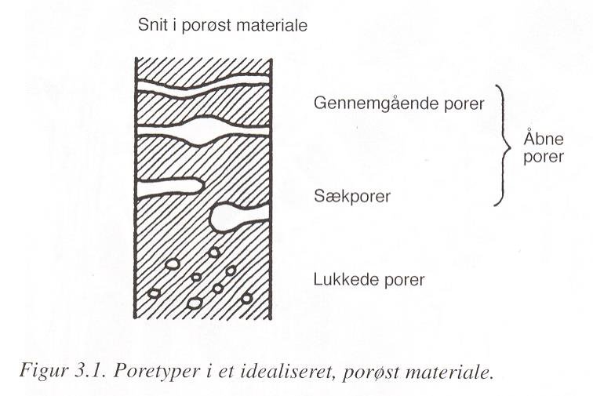
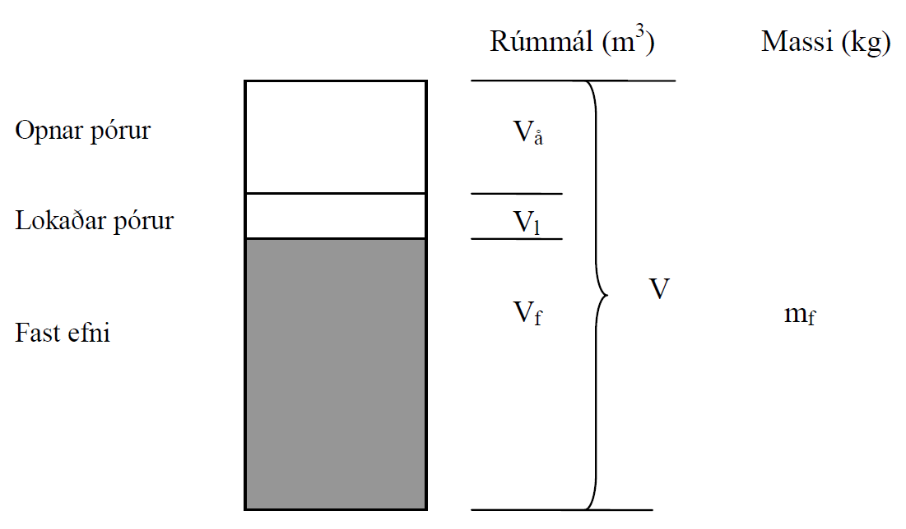
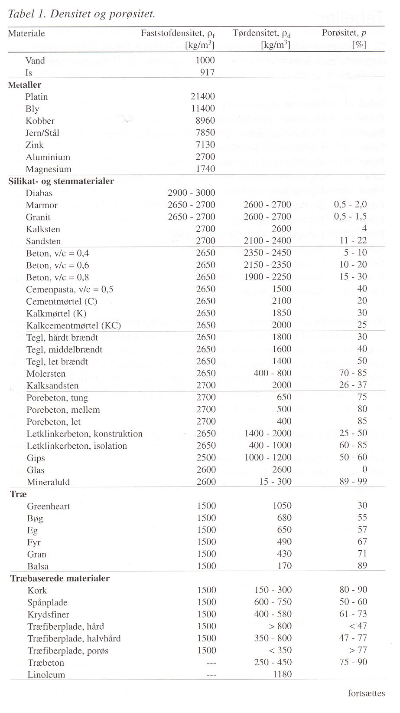
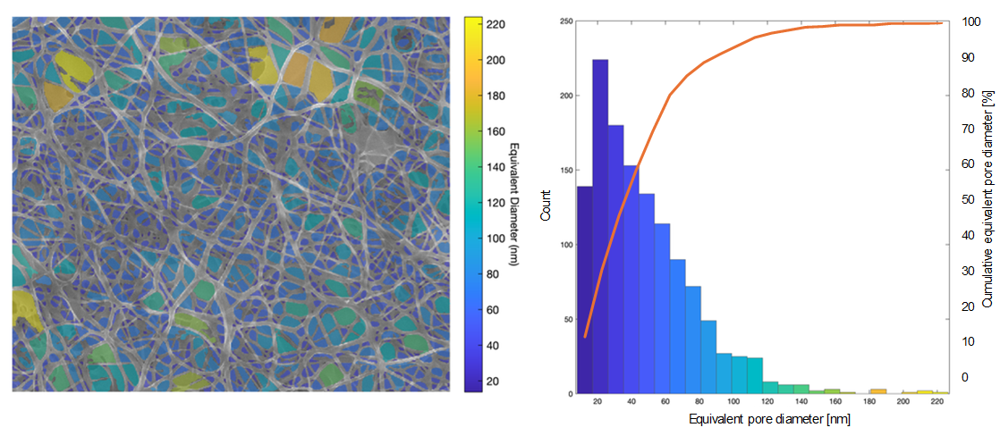
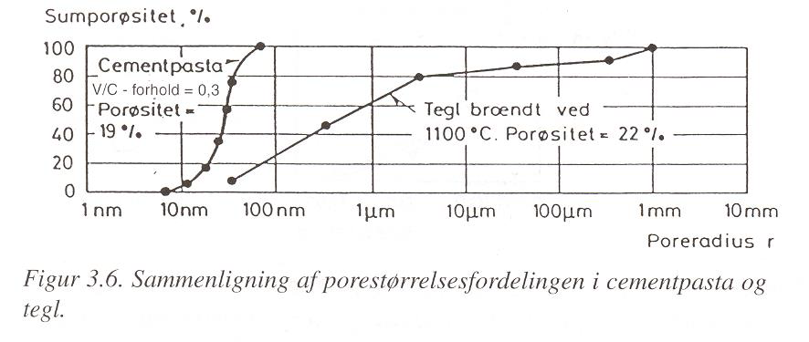

3. Kafli - Holrýmd og efnisþéttleiki
3.1. Þéttleiki og pórur
Fjöldi efna, að málmum undanskyldum, eru ekki fullkomlega þétt heldur eru loftbólur, pórur, í efninu. Pórurnar geta ýmist verið opnar (fyrir vatni) eða lokaðar, og í síðarnefnda tilvikinu þá gert ráð fyrir að vatn komist ekki í þær pórur. Slík efni eru sögð pórótt, og heildarrúmmál póranna, sem hlutfall af heildarrúmmáli efnisins, er kallað holrýmd (stundum póruhlutfall, porøsitet).
{kind=link}

{kind=link}

Heildarrúmmál:
Fyrir kornótt efni er skilgreint kornarúmmál, \(V_k\), sem er heildarrúmmál korna og póra í kornum, en rými milli korna ekki meðtalið. Orðið “density” var áður þýtt sem rúmþyngd, en nú sem þéttleiki (sem er réttara). Gamla hugtakið er þó enn til í heitinu kornarúmþyngd.
Holrýmd (porøsitet)
Fastefnisþéttleiki (faststofdensitet)
Sýndar-fastefnisþéttleiki (tilsyneladende faststofdensitet)
Þurr sýndarþéttleiki (tilsyneladende tørdensitet)
Vatnsmettuð kornarúmþyngd, yfirborðsþurr (korndensitet i vandmættet, overfladetør tilstand)
Kornarúmþyngd, ofnþurr (korndensitet)
\(V_k\) kornarúmmál, þ.e. rúmmál korna og póra í kornum, en rými milli korna ekki meðtalið
Fyrir efni sem innihalda skilgreind op eða göt, t.d. hleðslusteina er hægt að skilgreina;
Heildarþéttleika; efnismassi á móti ytra rúmmáli steins (með götum)
Nettóþéttleika; efnismassi á móti efnisrúmmáli steins (götin ekki reiknuð með)
Ýmis hugtök er varða þéttleika og holrýmd (mismunandi aðilar nota mismunandi hugtök og hugtökin talsvert á reiki – og ekki bara hérlendis!);
Íslenska |
Danska |
Enska skv. ASTM C127-81 |
|---|---|---|
holrýmd |
porøsitet |
porosity |
fastefnisþéttleiki |
faststofdensitet |
|
sýndar-fastefnisþéttleiki |
tilsyneladende faststofdensitet |
Apparent Specific Gravity |
þurr sýndarþéttleiki |
tilsyneladende tørdensitet |
Bulk Specific Gravity |
vatnsmettuð kornarúmþyngd, yfirborðsþurr |
korndensitet i vandmættet, overfladetør tilstand |
Bulk Specific Gravity (sat.surf. dry) |
kornarúmþyngd |
korndensitet |
|
heildarþéttleiki |
bruttodensitet |
|
nettó þéttleiki |
nettodensitet |
{kind=link}

Pórótt efni eru sögð gleypin (e. hygroscopic). Rakahegðun gleypinna efna verður tekin ítarlega fyrir í kafla 5.
3.2. Pórudreifing og pórufjarlægð
Holrýmd segir til um heildar póruinnihald efnis, en ekkert um stærðardreifingu. Pórustærð og stærðardreifing er mjög mismunandi eftir efnum.
Á myndinni er smásjármynd af þversniði úr efni notuð til þess að telja fjölda póra með ákveðna stærð.
{kind=link}

{kind=link}

Pórudreifingu verður ekki lýst með einni tölu, en þættir sem eru áhugaverðir eru;
stærðardreifing
fjarlægð milli póra (og þá iðulega póra yfir ákveðinni stærð)
heildarflatarmál póruyfirborðs (specifikke overflade, e:specific surface area)
Þessir þættir hafa m.a. áhrif á
styrk efnis (bæði háð holrýmd og pórudreifingu, þó svo jafna Ryschkewitch, \(\sigma_p = \sigma_0 \cdot e^{-B\cdot p}\), taki einungis mið af holrýmdinni)
rakaeiginleika (rakadrægni og vatnsdrægni)
frostþol (t.d. steypu).
hæfni til að binda efni, bæði vökva (t.d. rakadrægni) og lofttegundir (notað í efnafíltrun)
3.3. Mælingar á þéttleika, holrýmd, pórudreifingu og vatnsdrægni
Efnisþéttleiki og holrýmd Eins og sjá má af jöfnum og skilgreiningum hér að framan þá byggja mælingar iðulega á vigtun efnis við mismunandi rakaástand (þurrt, yfirborðsþurrt, rakamettað).
Með vigtun í lofti annarsvegar og í vatni hinsvegar má fá efnismassa (í mismunandi ástandi) og ákvarða rúmmál efnishluta sýnisins. Til að ákvarða heildarrúmmál (sýndarrúmmál) þá er sýnið ýmist stærðarmælt með mælistokk (málband, skífmál, mikrometer mæli) eða rúmtak mælt í íláti.
Útfrá slíkum mæliniðurstöðum má ákvarða holrýmd og efnisþéttleika fyrir mismunandi rakaástand.
Vatnsdrægni Heildar vatnsdrægni (rakamettun, mettivatn) má ákvarða útfrá mæliniðurstöðum sem fást að ofan. Stundum er áhugavert að skoða hvernig vatnsdrægni er háð tíma þar til mettun næst og er þá sýninu komið í snertingu við vatn og þyngdaraukning skráð á tíma yfir eitthvert tímabil.
Pórudreifing Stærðardreifing á pórum er almennt mæld með því að athuga hversu mikið af vökva með þekkta eiginleika gengur inn í sýnið við mismunandi mismunaþrýsting (milli sýnis og vökva)
áður var yfirleitt notað kvikasilfur og settur yfirþrýstingur á kvikasilfrið
nú er gjarnan notað t.d. vatn og settur undirþrýstingur á sýnið (e:suction)
Pórustærð og fjarlægð milli póra er í steypu almennt ákvarðað með athugun á sýni í smásjá, upplýsingar má fá með beinni talningu og mælingu, eða myndgreiningu.
Dæmi:
Mæla skal efnisþéttleika, og holrýmd steypusýnis:
Sýnið vegið þurrt í lofti -> gefur efnismassann \(m_f\)
Sýnið vatnsmettað (opnar pórur fyllast af vatni) og vegið a) í lofti, b) í vatni
\(m_{2a}-m_f\) gefur mettivatnið og þar með rými opinna póra, \(V_å\)
\(m_{2a}-m_{2b}\) gefur rúmmálið sem sýnið ryður frá sér og því heildarrúmmál sýnisins V (1 g samsvarar 1 \(cm^3\))
Til þess að ákvarða fastefnisþéttleikann, \(\rho\), þarf að mala sýnið og ákvarða síðan rúmmál malaða hlutans, \(V_f\).
Eftirfarandi mæliniðurstöður fengust úr mælingum;
Sýni vegið þurrt í lofti |
\(m_f = 2200 g\) |
|---|---|
|
|
Ákvarðið útfrá þessum niðurstöðum eftirfarandi stærðir fyrir umrætt steypusýni;
Heildarrúmmál, \(V\)
Rúmmál opinna póra, \(V_å\)
Holrýmd, \(p\)
Sýndar-fastefnisþéttleikann, \(\rho_{tf}\)
Þurran sýndarþéttleika, \(\rho_d\)